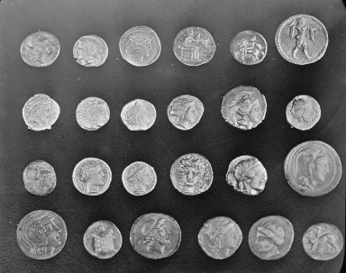

동전 경계의 원 피팅
선택 성분의 채워진 픽셀 경계를 ROI 로컬 좌표로 피팅합니다.
입력과 SDK 결과
사진에서 확인하기
실제 사진을 처리한 SDK 실행 결과와 독립 검증 수치입니다. 입력과 처리 단계, 검출 결과를 겹쳐 보며 좌표와 수치를 확인하세요.
측정 단위픽셀 (px)실측 스케일 없음
결과는 미리 계산된 예제 데이터입니다. 브라우저에서 SDK를 실행하지 않으며, 실제 제품의 합격 판정이나 물리 치수를 의미하지 않습니다.
계측 예제를 불러오는 중입니다.
픽셀 살펴보기표시 단계의 브라우저 디코딩 값
MEASUREMENTS
측정·검증값계측 결과
검출 위치와 수치는 저장된 예제 실행을 기준으로 합니다.
표시된 영역과 형상
PROCESS
처리 흐름
단계의 입력과 결과를 확인합니다.
PROFILE
실행 기록표본 그래프
영상에서 얻은 표본을 별도로 보여줍니다.
SETTINGS
적용한 설정
REFERENCE
API와 사진 출처
표시된 예제의 기록을 JSON으로 저장합니다.



측정 결과와 단위
| 측정값 | 결과 | 단위 | 해석 |
|---|---|---|---|
| 중심 x | 347.258 | px | ROI 원점을 더한 글로벌 중심 |
| 중심 y | 186.384 | px | ROI 원점을 더한 글로벌 중심 |
| 반경 | 30.7558 | px | 피팅 원 반경 |
| 직경 | 61.5116 | px | 반경의 두 배 |
| 채택 수 | 258 | points | SDK 허용 잔차 안의 점 |
| RMS | 0.777209 | px | SDK가 반환한 채택점 반경 잔차 |
처리 순서
- 경계 추출 ·
SciPy binary_fill_holes / binary_erosion이진 성분의 경계 픽셀 중심을 만듭니다. - 원 피팅 ·
zvision.fit_circleROI 로컬 점으로 원을 적합하고 전체 영상 좌표로 표시합니다.
표시 영역과 실제 처리 범위
선택 성분 주변 영역의 경계 점을 ROI 로컬 좌표로 원 피팅하고, 결과 중심에 영역 원점을 더해 전체 영상 좌표로 표시합니다.
피팅 점 추출 영역: x=311, y=152, 폭=73, 높이=70 px. 이 사각형의 의미와 실제 연산 범위는 위 설명을 따릅니다.
파라미터
- inlier_threshold = 4.0
- 반경 잔차 한계(픽셀)
- boundary_points = 258
- 경계 픽셀 중심 수
어떻게 검증했는가
NumPy로 각 경계점의 |hypot(x−cx,y−cy)−r|와 채택 수 및 RMS 재계산
사진과 결과를 해석할 때
공개 예제 사진을 입력으로 사용한 재현 예시입니다. 사용자 생산 영상이 아닙니다.
길이와 면적은 픽셀 및 픽셀 제곱입니다. 실제 치수·장비 정확도·생산 합격 판정이 아닙니다.
사진의 원본 데이터 설명과 사용 조건 · Brooklyn Museum · no known copyright restrictions